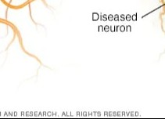
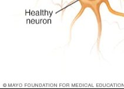
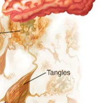
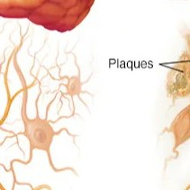
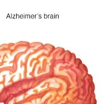
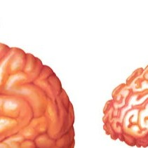

The puzzling case of Alzheimer's Disease... can you solve this puzzle to learn more about what a brain looks like with Alzheimer's?






Did you complete the puzzle?
Congratulations on completing this puzzle! It is now time for you to learn more about Alzheimer's disease. This is one of the most prevalent neurodegenerative disorders in the United States - 6.5 million people in the United States over the age of 65 have this disease, making it the leading cause of dementia. This disease, as a type of dementia, leads to the loss of higher cognitive function and memory, leading to forgetfulness in the short run, and loss of short and long term memories in the long run as well as extreme personality changes. Individuals with Alzheimer's are susceptible to depression and other mental health conditions due to the disease's interaction with the limbic system, the site of memory and emotion in the brain. There are currently no cures for someone diagnosed with Alzheimer's disease, but there are treatments, including a newly improved treatment known as Lecanemab that is thought to help slow the progression of the disease.
The molecular mechanism of Alzheimer's disease is still poorly understood. The proteins thought to be involved in the pathology of the disease include tau and B-amyloid.Tau is a protein involved in maintaining the structural integrity of cells like neurons as well as in trafficking other proteins and nutrients throughout the cell via structures known as microtubules. In Alzheimer's disease, this protein forms tangles, as seen in the puzzle. These are thought to lead to the loss of function and death of neurons through loss of structural integrity and trafficking capabilities in the cell. B-amyloid is technically a fragment of a larger protein that is thought to build up and form toxic plaques or clumps in the brain that disrupt normal neural communication, leading to cell death. The combined effect of these two protein pathologies is thought to be what leads to the neuronal death that ultimately results in the full-blown progression of Alzheimer's disease and the cognitive symptoms it causes. Certain genetic precursors have been identified which increase an individual's likelihood of developing Alzheimer's disease, and many of these pathways are associated with metabolism in the body, like the breakdown and usage of fats and glucose. Insulin dysregulation is even thought to be a potential causative agent of the disease.
Famous individuals who have suffered from this disease include famous actor Sean Connery. It was also featured in the TV show Grey's Anatomy, with the main character Meredith Grey's mother having Alzheimer's in the show.